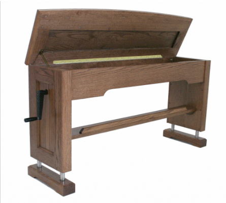
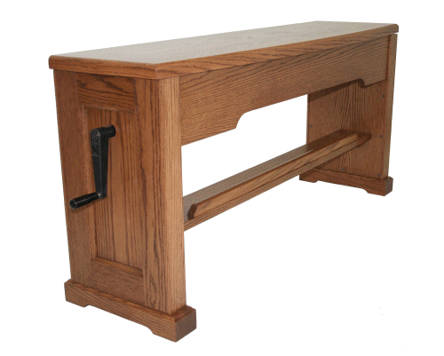

D.L. Simmons & Company Church Organs

Adjustable Benches
The Phoenix Hydraulic Adjustable Bench is very sturdy, stable, and operates smoothly and easily. It is much better than most other adjustable organ benches because it uses 4 heavy duty hydraulic cylinders at each corner. Most adjustable organ benches operate mechanically and are hard to adjust while sitting on the bench and this gets worse as the mechanism wears. The Phoenix bench is easy to raise to the required height even with 3 or 4 large people sitting on it! This extremely well-built system is dependable, long-lasting, and will never let you down (unless you want it to!).Because of its unique design, the Phoenix Hydraulic Adjustable Bench is the only adjustable organ bench we know of with a lift lid and large music storage compartment.



WEBSITE CONTENTS COPYRIGHT© 2015
DL SIMMONS & COMPANY CHURCH ORGANS
DL SIMMONS & COMPANY CHURCH ORGANS